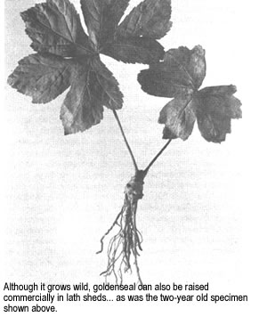
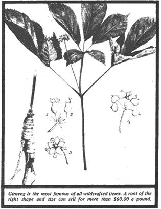

Wildcrafting For Fun And Profit
One of the oldest professions in the civilized world is the collection and preparation of wild plants for use as drugs, special foods or home remedies. James E. Churchill tells us how to become a wildcrafter and all about wildcrafting.
By the Mother Earth News editors
July/August 1974
One of the oldest professions in the civilized world is the collection and preparation of wild plants for use as drugs, special foods or home remedies. Ancient as this skill is, however, it's far from outdated. Right this minute, in various parts of the United States and Canada, wildcrafters are going about their business of gathering and drying various botanicals to be shipped to buyers.
The treasure these hunters seek in the woods and fields is a wide range of plants, both rare and common, for which dealers will pay correspondingly varied amounts. Of course, only certain parts of a given species are valuable some are collected as herbs (which, in wildcrafters' terminology, means leaves and stems). In other cases only the bark is taken. This may be the covering of the root, as with blackberry, or as with slippery elm the inner skin of the trunks or limbs, after the outer layer has been scraped or "rossed" off.
The most profitable materials, however, tend to be roots. And the most famous root of all from a five leafed, dark green plant known as ginseng (Panax quinquefolfus) sells for over $50.00 a pound (sometimes $60.00 and up). A really lucky hunter may find five or ten pounds in a single patch!
HOW TO BECOME A WILDCRAFTER
If the time honored vocation of herb collecting appeals to you, your first step is to learn to identify the plants you'll hunt. The very best way to obtain this knowledge is by apprenticing yourself to a practicing wildcrafter and following him around all you can. It will probably take some doing to gain his confidence, however, since people of this calling are by nature and necessity a secretive, closemouthed lot when it comes to "stands" in their area.
I got pretty friendly with one fellow, many years ago, by helping him split wood and teaching him to eat several plants that were growing in his yard. Then I still had to convince him that I wouldn't be prospecting in his territory before he would show me how he dug and dried his stock in trade.
Even at that, my instructor didn't teach me much about how to work a new area. That's something everyone must learn for himself partly by instinct and partly by the common sense practice of hunting in spots with rich soil and deep to medium shade. It's also helpful to look for the more common plants nettles, catnip, wild ginger, May apple that grow .,in conjunction with valuable herbs. (All these indicators, the way, have the added advantage of themselves being salable to drug companies.)
If you can't find a working wildcrafter and have to go it alone, here's how: First write to several herb buyers (see : list with this article) and ask for their price sheets. Then go the library for a copy of Recognizing Flowering Wild Plants William C. Grimm ($7.95 from Stack pole Co., Cameron a Kelker Streets, Harrisburg, Pa. 17105) the best referee. I've ever found that can be obtained in a hurry. If you have trouble with the confusing variety of common names for plants, find out the Latin identification of the species you e interested in and verify its salability with a drug dealer.
For a permanent reference you'll want a copy of American Medicinal Plants of Commercial Importance by A.F. Sieve , (USDA Publication No. 77, 1930, available from the Supers ; tendent of Documents, Government Printing Office, Washington, D.C. 20402). Also purchase a copy of The Herbalist by Joseph E. Meyer. (This work was originally published in 1918. The 1968 hard cover edition, revised by Clarence Meyer, can be ordered for $4.50 from Sterling Publishing Company, Inc., 419 Park Avenue South, New York, N.Y.10016 or from MOTHER's Bookshelf.) Finally, if you can find a copy of The Dispea satory of the United States of America by Arthur Osol and Roil. ertson Pratt (published by J.B. Lippincott, now in its 27th edi. tion and priced at $30.00), you'll have access to a good part of the printed knowledge on plants of medicinal importance.
Before you harvest a large number of plants, you'd probably do well to cut and dry two or three samples of the species you intend to collect and send them to the herb buyer of your choice. Tell the dealer what you think the item is and ask for verification. Also estimate how many pounds you can deliver and request the current rate if it's different from the figure on the latest price list. Payments for herbs vary considerably from one season to another and among different companies, so if you have a large amount it will pay you to shop around for the best offer. And there's nothing wrong with holding well dried materials until the market is to your liking. OK. With the foregoing out of the way, you're ready to get started on the actual collecting of botanicals for sale.
GINSENG
It's rather ironic that, as far as medical science knows, the aristocrat of botanicals has no remarkable properties as a drug although some Americans do take it for a variety of physical complaints. (Several recent studies on the healing value of ginseng are described in The Ginseng Book by Louise Veninga, 1973, $4.95 from P.O. Box 1072, Santa Cruz, Calif. 95061 or from MOTHER'sBookshelf. )
Skepticism about ginseng, however, is confined to the West. The Chinese import large amounts and the roots especially the wild rootscommand a very high, though fluctuating, price. Note that the $50.00 plus figure I mentioned is only for the rough, untreated 'seng sold to dealers. Once the roots are processed (by a tightly guarded secret method which makes the roots almost transparent), they can bring several hundred dollars apiece from wealthy Oriental customers.
The source of this valuable commodity is a distinctively shaped herb about 18 inches high, which rises from a single stem and branches into stalks. (Jim Churchill reports in a separate letter that the 'seng he finds generally has three such branches. Jim writes, "I contacted a Mr. Tainter who handles more ginseng in a year than most people see in a lifetime. He says, 'Out of about 40 or 50 pounds of wet root, there may be two or three plants that have four forks. I have never seen five, although the old timers tell about seven or eight forks.' Mr. Tainter is in his 60's, so an 'old timer' must go way back. " MOTHER. ) From these stalks spring leaves. shaped almost exactly like raspberry foliage, but growing five to a cluster three large and two smaller. Directly in the center of the fork is the flowering stem which produces a yellow blossom sometime between May and August. Later, the bloom drops off and is replaced by brightred berries that remain on the plant until late September or October.
The root of the ginseng is thick, with many arms or branches. Once in a great while it may have a human shape. Such rarities can be very valuable, as they are supposed to be capable of reviving the waning physical powers of old men. Ginseng loves to grow in colonies, and isolated plants will almost always be sickly, spindly looking specimens as if they suffered from loneliness.
The plant's natural range is from Quebec to Manitoba and south to Georgia, Tennessee and Oklahoma. Since ginseng has been extensively cultivated, however, it's likely to turn up in almost any location where the shade is deep and the soil rich. In my state Wisconsin it occurs in hilly or semi hilly terrain and usually in conjunction with hardwoods. The patches I've found were almost all on western or northern slopes sometimes hidden in hazel brush and sometimes protected by nettles and other herbs.
I dig ginseng only in the fall, when it's easiest to find and when the roots are heaviest and will fetch the best price. Along about the last of September or the first of October, I watch the weather closely and when a good stiff frost has dropped some of the lesser plants and made distinct outlines of others, I equip myself with a clean burlap bag and a small shovel and take to the hills.
I'll poke around in all the rough country where I know the soil is good, with particular attention to out of the way places where no one goes but me. Small isolated patches of forest left standing when fields are cleared, for instance, always seem to yield herbs. I walk very slowly and carefully and part each patch of dense vegetation, constantly on the lookout for the gleam of red berries that means 'seng.
When I find a patch, I carefully count the individual plants and calculate the number of ounces I can expect to harvest. (It takes 50 to 60 or more average sized specimens to make a pound of dried roots.) If only two or three are present, chances are I won't dig them unless they look very old and very heavy.
My first step once I've decided to dig is to pick all the berries and set them aside where they won't get lost while I'm working. Next I use my shovel to remove the dirt from around individual plants taking great care not to break off any branch roots that extend to the sides. Then I cut the root free from its stem, shake off the dirt as well as I can and place the treasure in my sack.
Finally to finish the job I take the seeds I've set aside and carefully plants them about four inches deep in the spaded up earth. I cover them with mineral soil and pat the dirt down very well so that rain won't wash out the berries. Then, to make the job really complete, I blanket the bed with whatever leaves are in the area. (Another way to restock a ginseng patch after digging is to cut off the next year's bud, which forms directly under the foliage of each plant, and set it in solid mineral soil as if it were a flower bulb. This works especially well if the bud has rootlets.)
Back home with my sack of roots, I wash away whatever dirt is on them, shake them dry and place the harvest on screens in the attic. I turn my gatherings three or four times daily for the first four days, and once a day thereafter. In about two to four weeks they're dry enough to ship.
CULTIVATED GINSENG
Ginseng, of course, can be domesticated and often is. The tame product sells for about one third the price of the wild and buyers can readily tell the difference, because all cultivated plants in a batch will be about the same age. In contrast, the age of roots in a foraged shipment will vary from about six years on up (possibly all the way to a century). Nevertheless, raising this crop can be a very profitable enterprise for a grower who prepares the soil properly, controls disease and has the patience to wait six or eight years for his first harvest.
Some folks stock their 'seng operations by replanting wild roots under small houses made of lath or in specially prepared beds. There are also many commercial sources of seed and growing instructions (see the classified sections of outdoor magazines).
I've planted ginseng in half a dozen areas of a large national forest, and one patch is beginning to look very promising. If you do likewise, of course, you'll want to choose locations where "the hand of man seldom sets foot". Comparatively few people nowadays know what ginseng looks like, so the risk of your private bed being pirated is small a lot less, probably, than if you had it next to your cabin. (This may not be the case in all parts of the country. See the accompanying article by Douglas Elliott. MOTHER. )
GOLDEN SEAL
Valuable as ginseng is, it's only one of many species that are worth seeking, digging or even replanting. For instance, when I'm out on my 'seng hunts I'm always glad to run across goldenseal (Hydrastis canadensis). Since the roots currently sell for about $5.50 a pound, this find isn't in the same class with ginseng. In some places, though, it's much more common and can be just as profitable. (So much so that this herb, too, may be threatened by overhunting so use restraint when in the field. MOTHER. )
Goldenseal grows six to twelve inches high, with a single round stalk branching into two leaf stems. The leaves are divided into deep lobes, so that five or more appear to grow in a cluster. A pinkish flower is found between the stalks and, as with ginseng, the blossom is succeeded by red berries. The plant ranges from New York to Minnesota and south to Georgia and Missouri. Goldenseal likes rich soils and often occurs in damp, open clearings such as the fringes of a forest pond.
As far as I can determine, goldenseal isn't cultivated although I know a side glancing loner of a bushman in northeastern Wisconsin who says he "coaxes 'seal" and can make it grow faster than it would normally. (Commercial growing rtes practiced during the early years of this century. See A.R.
Harding's Ginseng and Other Medicinal Plants $4.00 in paperback from Emporium Publications, P.O. Box 207, Boston, Mass. 02129for a description of the procedure. MOTHER. )
Goldenseal, too, is best dug in the fall when the underground parts are heaviest and most full of "virtue". The method of collection and preparation is the same as for ginseng, except that the roots can be sliced to speed the drying. Goldenseal leaves and stems are valuable in their own right (about $1.50 per pound) and can be thoroughly cured on screens. Almost any firm that buys 'seng will accept this plant also.
BLOOD ROOT
Another valuable medicinal plant found throughout the United States is blood root (Sanguinaria canadensis). This species prefers well drained soil at the edge of roads and clearings. The single white flower growing out of a mass of large, deeply scalloped leaves suggests a white dove of peace flying up from a flock of thunderbirds. The plant produces an encapsulated fruit, but propagates mostly by the roots.
As the name suggests, the roots of Sanguinaria canadensis are a very distinct orange and exude a bright red "blood" when broken. This brilliant juice is contained in separate minute vessels, so that a cross section of the tissue examined under a 125 power microscope looks like a belt studded with rich rubies. When the root is dried for shipping, however, the dye seems to disappear, leaving a deep yellow color. Blood root currently brings about 800 a pound. I'm sure the species could be cultivated, but it's generally so common that this is not necessary.
OTHER ROOTS
Most buyers' price lists include more than 40 roots in current demand: May apple, blackroot, wild ginger, blackberry and many others. A good general rule for collection is that the underground parts of annual plants should be dug just before the flowering period, while those of biennials and perennials are best taken in late fall or early spring. The roots should then be washed well without scrubbingand dried thoroughly. All except ginseng may be split before drying and laid outdoors in indirect sun, or indoors next to very mild artificial heat. The finished products should look and feel dry.
LEAVES AND STEMS
The upper portions of some plants are also dried for shipping. The usual method is to place the foliage on horizontal window screens in a dry place in the shade or indoors. This treatment should proceed as rapidly as possible, since herbs that have dried too slowly will turn black and be unacceptable to dealers. If you know how well cured hay looks and feels, you have a pretty good idea of what a correctly prepared herb is like. But, just to be sure, you can send a sample of your shipment to a buyer for approval before forwarding the complete lot.
All botanicals should be clean and free of sticks, stems, grasses and other foreign matter. They must be kept away from oils, grease or highly malodorous materials such as paint thinners or cleaning solvents. Ship the plants in burlap bags. Cheaper items may be sent by truck, more expensive goods by parcel post.
REFINING
There's no reason at all why an herb digger shouldn't carry the process one step further and refine his own drugs. If you can produce a salable, clean product, a buyer may accept it.
One example from my own area is the peppermint farms that have their own equipment for distilling mint oil by the barrel thereby eliminating the processor and gaining a good price for both growing and refining. To produce exactly the right grade of oil requires some care, but no one I know seems to have any trouble adapting to the procedure.
THE WILDCRAFTER'S INCOME, AND HOW TO BOOST IT
Your potential income from the collection of wild plants depends partly, of course, on your location. Some parts of the country are much richer in herbs than others. In particular, anyone who's lucky enough to live in the Blue Ridge Mountains of Virginia or North Carolina is sitting right in the middle of America's herb garden the region that produces almost 80% of the annual harvest. Even so, the resource is far from exhausted. Some authorities estimate that there are three or four times as many medicinal plants in the Blue Ridge area as are found and gathered. Apparently, vast stretches are never even visited by herb collectors and still offer an abundance of prime botanicals: ginseng, May apple, white pine and wild cherry bark, black haw, goldenseal, lobelia and sassafras.
No matter where you live in the green regions of the United States and Canada, though, you'll have access to some marketable herb.
And how much can you hope to earn from a good day's work in fair herb country? The answer is: almost nothing to several hundred dollars depending on what methods you use and how lucky and skillful you are at finding the plants. It's a matter of matching the product to the market. Develop a seeing eye and some digging equipment, and you can make enough to buy a shawl for your lady, a used tractor or even a complete homestead. Good hunting!
DEALERS IN BOTANICALS
Everett L. Anderson, Route 2, Mc Leansboro, III 62859
Enclose stamped seld addressed envelope with all inquiries. Mr. Anderson says " I get a lot of letters from curiosity seekers who take upmy time and never deliver anything
L.S. Dinkelspiel Co.
229 E. Market St.
Louisville, Ky. 40202
St. Louis Commision Co.
4157 N. Kingshighway
St. Louis, Mo. 63115
Frank Lemaster & Co.
Rt. 1
Londonderry, Ohio 45647
F.C. Taylor Fur Co.
227 E. Market St.
Louisville, Ky. 40202
S.B. Penick & Co.
100 Church St.
New York, N.Y. 10007
Wilcox Drug Co., Inc
P.O. Box 391
Boone, N.C. 28607
Copyright 2001 2002, Ogden Publications, Inc.
All rights reserved.
 |
 |
 |